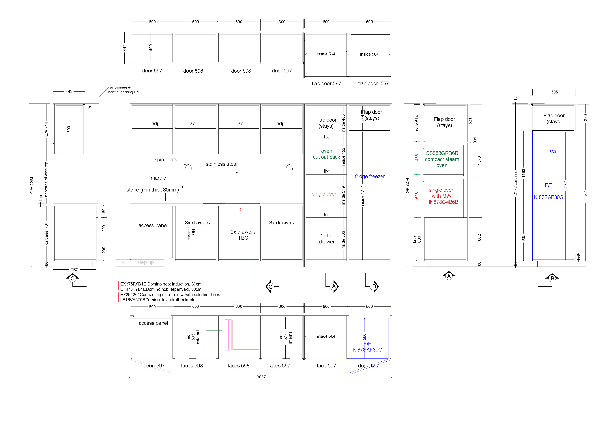

Przygotowuję rysunki techniczne mebli oraz dokumentację produkcyjną dla pracowni stolarskich, architektów wnętrz i wykonawców.
Opracowuję rzuty, elewacje, przekroje, detale konstrukcyjne, podziały korpusów, informacje materiałowe oraz rozwiązania potrzebne do wykonania mebla w warsztacie.
Moim celem jest tworzenie czytelnych rysunków, które pomagają uniknąć błędów na produkcji i usprawniają komunikację między projektantem, klientem i wykonawcą.
← Powrót do strony głównej